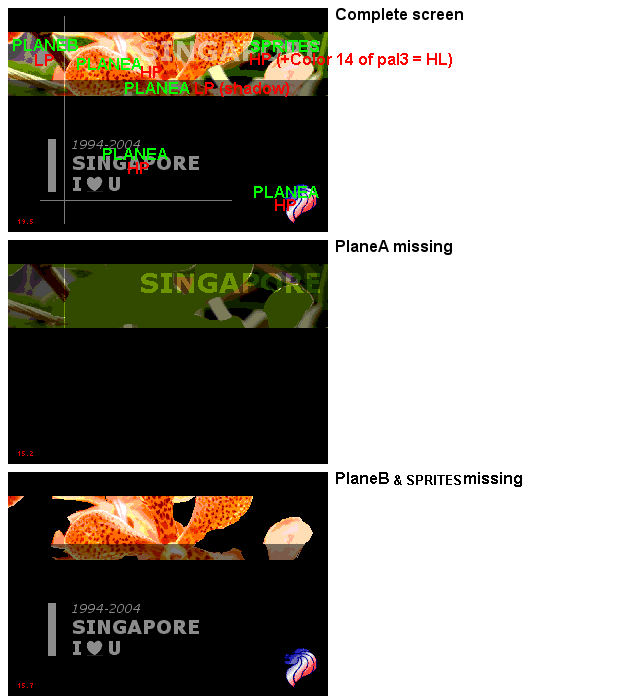

Pic e - Boost color tips 1 : Shadow/Highlight !
The Shadow/Highlight mode is enabled/disabled using a VDP register.
To use Shadow, the methods are:
-Put LP tiles in PlaneA over LP tiles in PlaneB.
-Display a sprites (using the last pal:3) with pixels using colors 15 (0xF) of the palette.
To use Highlight, the method is:
-Display a sprite (using the last pal:3) with pixels using colors 14 (0xE) of the palette.
Shadow+Highlight = Normal color.
